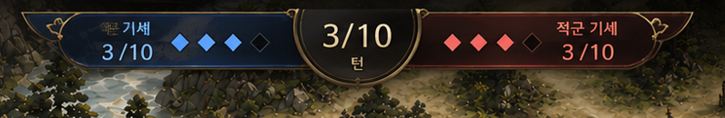
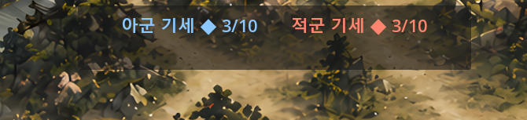
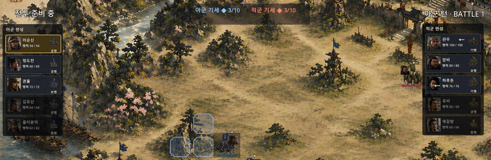
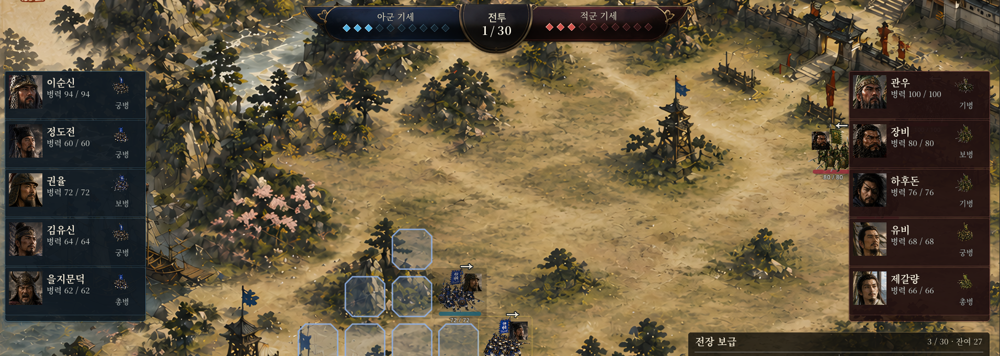
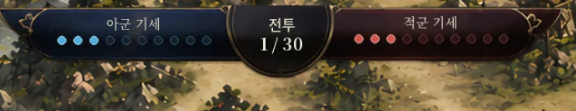
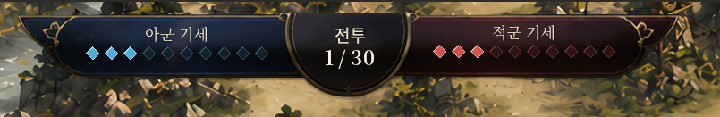

Why Couldn't a Single Image Just Work?
Two Days on EASTWAR's Battle UI
August 2, 2026It Started as Just One Screen That Had to Be Right
The point had come where EASTWAR's battle screen needed to look like an actual commercial game. A mockup request went to 채코치, and the result was exactly right — blue/red momentum gauges, a turn indicator in the center, general cards lined up on both sides. It was precisely the image in mind.

The trouble started right after. "Let's build this as-is" turned into actual implementation, and the more it got built, the stranger it looked. It kept drifting further from the mockup. Trying again and again didn't change anything.
One thing wouldn't work: precise UI design.
What the Fear Actually Was
The first assumption was "채코치 just isn't good at this." Digging deeper showed that wasn't it at all. The request itself — "draw one complete, finished screen in one shot" — was something an image-generation AI fundamentally couldn't do.
In hindsight, it made sense. The exact momentum gauge value, troop numbers, grid alignment — this kind of "information" isn't something you can draw as a picture and reproduce identically every time. What AI is good at is "pictures" — backgrounds, characters. Not "information" — numbers, alignment.
Knowing this didn't make the fear go away, though. If anything, it got worse. "If this is impossible in principle, does that mean commercial-grade UI is permanently out of reach?" With a Steam Early Access goal already set for EASTWAR, staring at the fact that even one screen couldn't get made properly was destabilizing for days.
Asking "Is It Even Possible" Again
Instead of staying stuck in frustration, the question changed — from "why didn't this work" to "is this actually possible at all."
The answer turned out to be clear: yes, it was possible. The order was just wrong.
Break the screen apart and it's actually two different kinds of elements mixed together:
- Picture elements — backgrounds, character portraits, frame decoration — the job of an image-generation AI
- Information elements — gauges, numbers, text, grids — things code needs to assemble
Bundling both together into a single "finished screen" request was the root of the failure. The fix was simply to approach them separately.
Measuring It Showed Half the Work Was Already Done
From here, it moved from intuition to data. Opening the actual Godot project files turned up something surprising: the HUD structure already existed in full. Ten momentum slots, the general roster, the info panel, the log panel — all there. Even the code wiring momentum data was already written.

So why did the screen look so flat? The cause was simple: none of it had any style applied. With no unified design theme file, most panels defaulted to plain gray, and even a font that already existed in the project just wasn't connected.
In other words, there was almost nothing left to build from scratch. It was just "something that already existed, with no clothes on."
Small, One Piece at a Time
From this point, ambition got dialed back. Instead of trying to finish all six components at once (top HUD, left/right rosters, bottom info panel, buttons, log panel), the plan narrowed to just one — the top HUD's font and color, and nothing else.


Seeing the result was the first real moment of confidence. Without drawing a single new image, pure font-linking and color unification produced a completely different screen. For the first time, "this is good enough to move to the next stage" was a judgment grounded in data, not a guess.
Still Scared, Though
Even at this point, the fear didn't fully go away. The reason was simple: the stage of adding "actual pictures" — placing real frame and decoration images onto the screen — was something that had never been done before, not once.
The breakthrough came from acknowledging what was actually available. Illustration wasn't a skill, but Photoshop was. Realizing there was a safety net — that even if the AI couldn't produce a perfect result, it could still be finished by hand — made the weight lighter. And one more thing: this placement work turned out to be faster done directly, by eye, in the Godot editor than by writing code to instruct it. As it turns out, game studios handle this exact stage the same way — a person adjusting things by hand inside the engine. The unfamiliar, intimidating task turned out to be standard industry practice.
Starting With the Smallest Piece
Of the six components, the smallest and most self-contained one got picked first — just the center turn-indicator panel. The mindset was: "if this one piece works, everything else will too."
The design 채코치 produced got taken into Photoshop to build three frame images — left, center, right. How precisely symmetrical they were got measured numerically: 95.3% match, well past the point of being noticeable to the eye.
Only after that check did the images actually go into Godot. Spacing between panels got tightened by eye. Text placement got checked to make sure nothing was hidden behind the decoration. Then: save, commit, push.
The Screen Was Alive
Seeing the resulting screenshot made it clear this wasn't a frozen mockup — it was an actual battle in progress. Turn 8/30, real-time troop movement, HP gauges all live on screen, with the new frame sitting naturally in place among all of it.
Adjusting the three-piece HUD directly inside Godot's 2D view led to a judgment call: it made sense to just merge it into one piece. That way, symmetry and alignment stopped being a concern — information could sit directly on top of the image background, with 채코치 asked to align the numbers and text to match the artwork.
It didn't stop there. The momentum slots also got tried in diamond form instead of squares. The first attempt came out rounder than intended — and that wasn't bad either.

A second attempt produced a genuinely sharp diamond, and the two got placed side by side for the final decision.

Not deciding the "correct answer" in advance, and instead judging based on what actually came out — that too was just a natural part of the process.
What Actually Got Gained
Looking back, what these two days produced wasn't just one nice-looking HUD. It was a reusable production formula.
Design decision (AI coach)
↓
Fine-tuning images in Photoshop and adjusting placement feel directly in Godot's 2D view (human)
↓
Implementation, execution, verification, capture (coding AI)
↓
Preserving a Git checkpointSkip any one of these four steps, and the old failure comes back — that much is clear now. AI trying to draw a complete screen alone fails. Handing off the decisions that need human judgment — spacing, shape choice, tone — to AI causes drift. Changing code without actually checking the real screen leads straight into the "it should probably work" trap. It only ran smoothly once each of the four got placed exactly where it was strongest.
What Comes After the Fear
Two days ago, the thought "if this doesn't work, does the whole commercial dream fall apart?" was deeply destabilizing. Looking back now, that fear wasn't a sign of insufficient ability — it was just the ordinary feeling anyone has in front of something they're doing for the first time.
The same thing happened learning Godot for the first time, and facing a 20,000+ line file for the first time. And the method was always the same: don't stop, dig into the cause, break it into small pieces, and move forward verifying one piece at a time.
Moments like this will keep coming while building EASTWAR. Whenever they do, these two days are worth remembering. Even the things that seemed impossible turned out, in the end, to be possible.